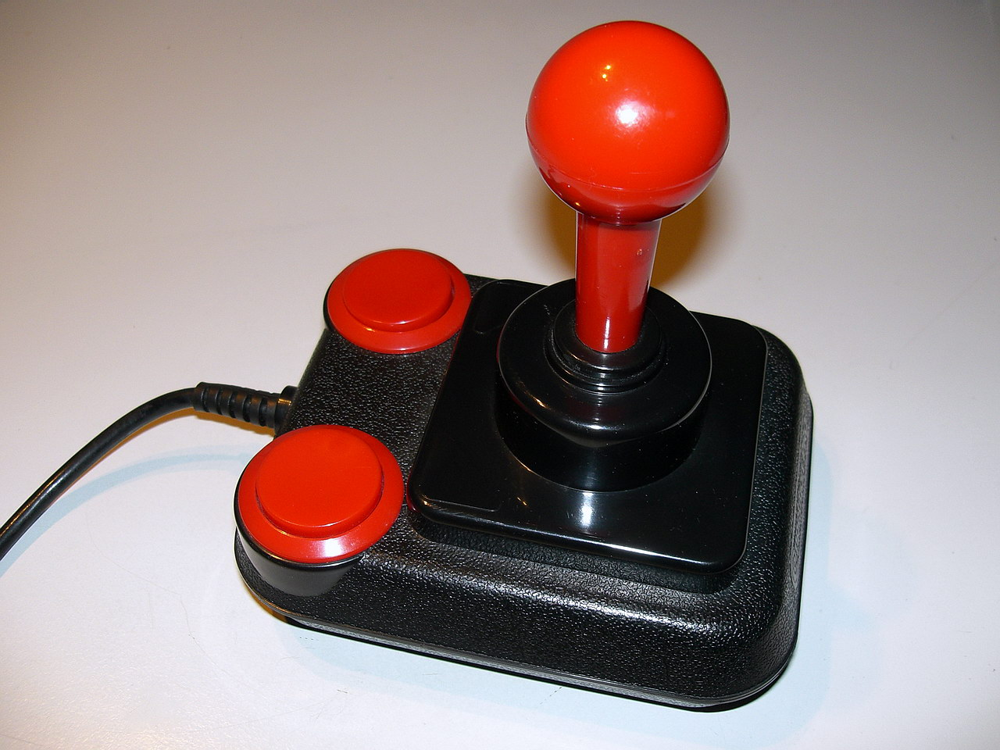
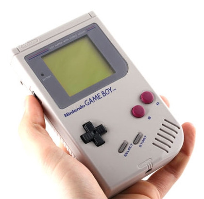

Los videojuegos nacieron en máquinas especializadas: primero en laboratorios y luego en arcades y consolas hogareñas. Cada experiencia dependía de una pantalla, controles dedicados y hardware pensado para una sola tarea: jugar. Esa separación hizo del videojuego un objeto tecnológico propio, con dispositivos, accesorios y espacios específicos.

Con las consolas de mano, el juego se volvió móvil. Aparatos como las portátiles de cartucho demostraron que era posible llevar una biblioteca de títulos en la mochila y jugar en cualquier lugar. La pantalla, los botones, el sonido y la batería quedaron integrados en una sola pieza compacta, anticipando varias de las lógicas del dispositivo móvil contemporáneo.

El smartphone heredó y reformuló esa tradición. Reemplazó cartuchos por descargas, sumó pantallas táctiles, conexión a internet, sensores de movimiento, cámaras y geolocalización. Así aparecieron nuevas formas de jugar: partidas breves, multijugador en red, juegos basados en ubicación y experiencias compartidas en redes sociales o plataformas de video.
En el celular, el videojuego converge con otras funciones del mismo aparato: mensajería, música, video, fotografía y comercio digital. Lo que antes exigía consola, televisor, joystick y soporte físico hoy puede suceder en un objeto de bolsillo que también sirve para comunicarse, orientarse, producir contenido y trabajar.